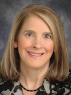
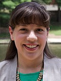
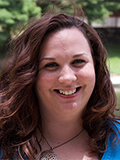

The conference will open Thursday evening with the first keynote address. It will include more than 90 oral talks as well as a poster session. The program can be seen here: program
Dr Rosalyn Moran, Senior Lecturer in Mathematical Neuroscience at the Department of Engineering MathematicsRosalyn pioneers 'mathematical microscopes' using dynamic causal modelling and Bayesian statistics to probe how certain chemicals modulate brain connectivity. She employs these methods in empirical neuropharmacological studies to examine their algorithmic role in hierarchical inference under the Free Energy Principle. Rosalyn is a co-author of SPM. |
|
Dr David Strayer, Professor of Cognition and Neural Science, University of Utah, USA.The multitasking driver: Why talking to your car will drive you to distraction. Dr Strayer's research examines how attention functions within multiple research domains, from assessing the limits of human multitasking ability while performing complex tasks such as driving, to studying how attentional capacities can be restored by interacting with nature. He uses converging methodologies to measure changes in both attention and performance, from psychophysiological (EEG and fMRI), subjective ratings, to primary (e.g., driving performance) and secondary task (e.g., reaction time) measures. |
|
|    |
Dr Denise C. Park, Director of Research at the Center for Vital Longevity, Distinguished University Chair in Behavioral and Brain Sciences, and Regents' Research Scholar, University of Texas, Dallas.Dr Park's research focus is on understanding the neural mechanisms that account for age-related cognitive decline, and determining how enriching and cognitive demanding experiences can facilitate cognitive health, thus delaying brain aging and the onset of Alzheimer's disease. Dr Park has also pioneered research in cultural neuroscience, focusing on understanding how cultural experiences sculpt neural function and behavior in both old and young adults. Dr Park's work is guided by the 'Scaffolding Theory of Aging and Cognition' (Park & Reuter-Lorenz, 2009), an integrative theory of cognitive aging that suggests that the brain sustains a series of neural insults with increasing age. Dr Park directs the Dallas Lifespan Brain Study (DLBS), a large longitudinal study that uses multimodal imaging (PET, MRI, and fMRI) to examine changes in the structure and function of the brain across the lifespan, mapping the changing neural circuitry associated with cognitive performance across the lifespan. NB We are sad to announce that Dr Denise Park will not be able to deliver the scheduled keynote lecture at ACNS 2016, due to unexpected health complications. Her work will be presented by two close collaborators, Dr Sara Festini and Michelle Farrell. The title of their joint talk is: Scaffolding of the Aging Mind: How Neural Depletion and Neural Enrichment Factors Affect Cognition. Michelle will present an overview of the Scaffolding Theory of Aging and Cognition (STAC) model and evidence from neural data. Sara will discuss interventions that enhance scaffolding and the effect of engagement and busyness on enhancing cognition in older adults. Dr Sara Festini & Michelle Farrell, University of Texas, Dallas.Sara Festini is an Aging Mind Foundation Postdoctoral Fellow at the Park Aging Mind Lab in the Center for Vital Longevity. She completed her doctoral training in the Cognition and Cognitive Neuroscience Area of the Psychology Department at the University of Michigan under the guidance of Dr Patricia Reuter-Lorenz, investigating the consequences and mechanisms of directed forgetting in working memory. At the University of Michigan, she also worked with Dr Rachael Seidler, using fMRI data to study cerebellar resting state functional connectivity in Parkinson’s patients ON and OFF medication, and examining the effect of emotion on motor learning. Sara is a member of the research team investigating the cognitive neuroscience of aging, using data from the Dallas Lifespan Brain Study (DLBS). She is primarily interested in examining whether certain lifestyle characteristics, such as day-to-day busyness, can heighten cognitive abilities and delay the course of normal brain aging. Michelle Farrell joined the Park Aging Mind Lab in 2012 as a Ph.D. student at the University of Texas at Dallas in Cognition and Neuroscience, investigating the impact of amyloid deposition on cognition in cognitively-normal adults. She previously worked as a research assistant to Joy Taylor at the Stanford/VA Aging Clinical Research Center in Palo Alto, California, examining how aging affects expertise in older pilots. She received a Bachelor’s degree from the University of California Berkeley in 2007, with a double major in Molecular and Cell Biology and Integrative Biology and a minor in Celtic Studies. While at UC Berkeley, Michelle worked with Rebecca Spencer and Rich Ivry, studying the impact of aging on sleep-dependent memory consolidation. Michelle’s primary research aim is to understand the cognitive and brain changes that are the result of the healthy aging process and how they differ from changes that are indicative of neurological disease, particularly Alzheimer’s disease. To date, her research has focused on amyloid, a protein that may indicate that individuals are in a preclinical stage of Alzheimer’s disease and at high risk for developing dementia. Additionally, she is interested in how lifestyle (i.e. education) and genetic factors (i.e. APOE) may modify amyloid accumulation and its effect on cognition. |
This year we will have four symposia: two invited and two selected from the open call. More information will be listed here soon.
ACNS is strongly committed to the promotion of equity in science. The Equity Working Group has developed our Equity and Diversity Policy which will be launched at this year’s conference, that has been developed by an ACNS working group chaired by Associate Professor Anina Rich (ACNS President) and Professor Jason Mattingley. A/Prof. Rich and Prof. Mattingley will give a brief presentation on the current state of ACNS in terms of gender equity, and an overview of the goals of the policy. Professor Penny Jane Burke will then give a presentation and officially launch the policy.
Professor Penny Jane Burke, Global Innovation Chair of Equity and Director of the Centre of Excellence for Equity in Higher Education at the University of Newcastle Professor.
Penny Jane Burke has published extensively in the field including Accessing Education effectively widening participation (2002), Reconceptualising Lifelong Learning: Feminist Interventions (2007, with Sue Jackson) and The Right to Higher Education: Beyond widening participation (2012) and Changing Pedagogical Spaces in Higher Education (2016 with Gill Crozier and Lauren Ila Misiaszek). Penny is Editor of Teaching in Higher Education and Access and Widening Participation Network co- Convenor for the Society for Research into Higher Education. Penny has held the posts of Professor of Education at the University of Roehampton, the University of Sussex and Reader of Education at the Institute of Education, University of London.
Chairs: Anina Rich & Jason Mattingley
Working group: Donna Rose Addis, Olivia Carter, Paul Dux, Muireann Irish, Katherine Johnson, Hannah Keage, Melanie Murphy, Simmy Poonian
Please note that, this is a free but ticketed event. A sit-down lunch will be served in the Promenade room for delegates who have indicated that they want to attend the launch. Some tickets are still available. Please enquire at Registration Desk. Lunch for other delegates will be served in the Whitesands
reception area.
This year we will have one large poster session. We aim to make this a vibrant and stimulating event. To help lubricate lively conversation, we will have a cash-bar and nibbles available throughout the session.